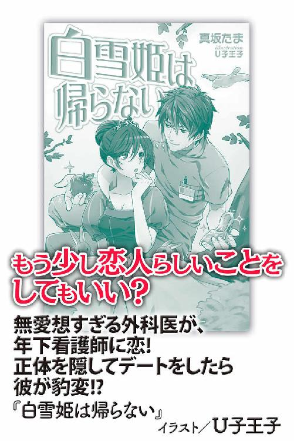
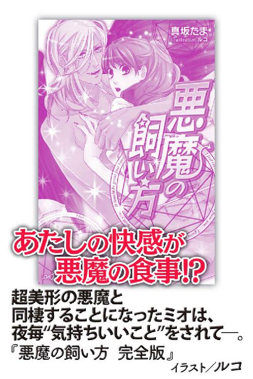

| シンデレラは踊らない (らぶドロップス) | |
| 真坂たま | |
| 株式会社パブリッシングリンク (2013) | |

シンデレラは踊らない
真坂たま
わたしのおかあさん は ほんとうは おおがねもちのむすめなの。
おばあさまは わけがあって おかあさんをてばなしたの。
だから いつか おばあさまが むかえにきてくれる。
おかねもちのおばあさま の おやしきのにわ は ばらでいっぱい。
そのばらのにわに おうじさまがいて わたしのなまえ を よんで だきしめてくれる。
ねえ すてきでしょう？
............ちゃん......
懐かしい夢を見ていた。ずいぶん昔の。
もう顔もおぼろげな友達の夢だ。
あの子と一緒に施設の庭でよくそんな話をした。お金持ちになったらこんな服を着る、お金持ちになったらあんなものを食べる、お金持ちになったらあそこへ行って、こんなことをして。
あいにくその夢はまだ叶っていない。
定期預金はやっと一〇万円。お金持ちにも小金持ちにもなっていない。
なんとか日々の生活はできているというだけだ。しかも一日休めば九千円を棒に振る。
麗已はよいしょ、と毛布を撥ね除けた。眠気はしつこく彼女を布団に引き戻そうとしていたが、手に入らなくなる九千円のことを考えてその誘惑を振り切った。
「おはよう、麗已」
麗已は鏡の中の自分に声をかけた。毎朝の習慣だ。ようやく眠気が去っていってくれる。
顔を洗って歯を磨き、その間にやかんを火にかけお湯を沸かす。一秒だって無駄にはできない。
うがいをし、試供品の化粧水を顔にたたき込み髪をとかすと、やかんがピーピーと呼んだ。
唯一の贅沢品であるコーヒーを、ゆっくりとドリップでいれる。
甘く、深い香りが立ち上って麗已は大きく息を吸った。
「よし！」
今日も一日が始まった。
麗已が働く弁当屋は大手のチェーン店で、彼女はアルバイトながらも店長の名札をつけている。いろんな仕事をしたが、いまのところこの弁当屋が一番長く続いていた。
ときには新規開店の他の店の応援にも行かされるが、この店を任されてすでに四年。最近では社員昇格の話も出ている。
社員になれば昇給はもちろん、本部の会議に参加したり企画段階から関わったりもできる。麗已はもっともっと自分の力を試したいと思っていた。
「店長！」
バイトの女の子が悲鳴じみた声を上げた。振り向いた麗已はカウンターに外国人が来ているのを見てフライヤーの前からすっとんでいった。
「なにをお求めですか？」
にっこりと微笑み英語で尋ねる。外国人男性は麗已の笑顔にうれしそうに微笑み返した。写真を指さしてこれはなにか、と聞いてくる。
「ゴモクゴハン、です。野菜や鶏肉が一緒に炊き込まれ、醤油で味付けしたお米の料理です」
他にも赤飯やがんもなどの説明をし、客は二つのお弁当を買っていってくれた。
「ああ～、助かりました～」
バイトの女の子が胸に手を当てて情けない声を上げた。
「この辺りは外資系の会社も多いから、簡単な英会話ができるといいわよ」
麗已は笑顔を向ける。
「さすが店長、こないだは中国語話してましたよね？」
「英語と中国語しかできないわよ。韓国語は勉強中」
「すごい！」
「必要に迫られてね」
「いっぱい勉強されてるんですね、カルチャースクールとか行かれているんですか？」
「まあね、それよりサラダの準備、頼むわ」
麗已は曖昧な笑顔で話を終わらせた。彼女が語学を修得したのはすべて公共放送のラジオ講座だ。最初は英語のひとつもできたら就職に有利だろうと思って始めた勉強だったが、休日に遊びにもいかない麗已にとって、語学修得は趣味のようになった。
毎日ラジオで会える講師や出演者は彼女にとって大事な友達だ。お気に入りの出演者が風邪で休んだときには本気で心配した。
語学堪能な女性が弁当屋にいる、ということで、麗已の店には外国人の来店が多い。彼らは麗已と短い会話をし、彼女の笑顔に元気づけられるようだ。
時々、デートの誘いをもらうこともある。麗已は愛想はよいが、決して一線は越えない。
「店長、日替わり弁当一〇個予約入りました。三〇分後に取りにくるそうです」
電話を受けていたバイトの男性が声をかける。
「はあい、じゃあ咲ちゃん、日替わり一〇個にかかってください」
「はーい！」
「山口さん、今日はたぶんカツが多く出ると思うんで、キャベツ余裕持って作ってください」
「え、なんでですか？」
「湿気が多いの。こんな日はカツが多く出るってデータがあるのよ、もちろんこの界隈限定だけど」
「わかりました」
「新メニューも相変わらず売れているから、今日もがんばりましょう！」
「はい、店長！」
店で働くバイトは麗已もあわせて四人。そのうち二人は麗已より年上だが、彼女のことを信頼している。
麗已は厨房の真ん中で足を開き腰に手を当てた。
「よし！」
忙しい時間の始まりだ。
麗已のシフトがあと十五分で終わるというときだ。
店の前に黒塗りの車が停まった。汚れひとつなく、鏡代わりに化粧が直せそうなほど、車体がピカピカに磨きあげられている。
その車から男の長い脚が現れた。グレイの品のよいスーツに車と同じように磨かれた靴、ゆっくりと上げられた顔は端正で、なでつけられた黒髪が一房、白い額に落ちている。
（あら、すっごいイケメン。こんな人もお弁当買うのね）
店内でチラシを片づけていた麗已はにっこりと笑顔を向けた。
「いらっしゃいませえ！」
客は麗已を見た後、ぐるりと店内を見回し、再び彼女に視線を戻した。
「......小此木麗已さんですか？」
「は？」
店で客から名前を呼ばれたことなどない。名札はつけているが、彼女の名字を初見で読める人間など今までいなかった。
「え、ええ。小此木ですけど......」
「お迎えにあがりました」
「は？」
「あなたのおばあさま、榊原悠子さまより、小此木麗已さま、あなたを遺産相続人として迎えるようにと命じられて参りました」
「はい？」
聞き取れなかった。いや、相手は早口で言っているわけでもない。内容が頭に入ってこないだけだ。ただ「おばあさま」という言葉だけが心臓の鼓動を大きくした。
「私と一緒にきていただけますか？」
「あ、あの、いや、ちょっと待って。わたし、今仕事中で」
「榊原グループの総帥の命令ですよ？」
スーツの青年は穏やかな中にも有無を言わせないような、キッパリとした口調で言った。
「こんなところでする仕事などとは桁の違うお金があなたの手に入るというお話ですのに」
「──こんなところ、って聞き捨てならないわね」
麗已はパンッとチラシでカウンターを叩いた。
「ここは小さくてもこの界隈のビジネスマンたちの胃袋を支えているのよ。それに仕事を内容で差別するってなんなの？ 労働はなんだって同じよ」
「これは失礼しました。ではお仕事が終わるまでお待ちしましょう」
青年は軽く頭を下げると、店を出て軒の下に立った。麗已はカウンターを拭き、チラシを並べ、厨房に入って手を洗い──
「店長......」
店の中のスタッフが不安そうな顔をする。それに彼女は笑顔を向けた。
「大丈夫、わかんないけどきっとなにかの間違いよ」
時計を見ると針がシフト終了の時間を告げていた。麗已は紙エプロンと帽子をはずしてゴミ箱に捨てた。
「じゃあね、お先に」
「お疲れさまでしたー」
「お疲れしたー」
スタッフの声に見送られて店から出ると、青年がすっと手を車の方に差し伸べた。
「お車にどうぞ」
「......あなたの素性もわからないのに？」
「失礼、私は白鳥衛人と言います」
指先に、魔法のように現れた名刺には「榊原総合商社 会長室付秘書」と書かれている。
「秘書さん......」
「はい、私も飢えた胃袋を持つビジネスマンですよ」
白鳥衛人が楽しげに笑う。うってかわって柔らかな雰囲気に、麗已はドキリとした。心が吸いよせられる......。
「あ、あの、さっき言ってた榊原悠子さんって......」
そんな自分を気づかれたくなくて麗已はあわてて目をそらした。
「あなたのおばあさまです」
「わたしの──」
麗已の心臓が再び大きく打つ。さっきとは別の感覚で。
「おばあさま、......本当に？」
「おばあさまについてご両親からお聞きになっていらっしゃいませんか？」
「......父の記憶はありません。母は......わたしが五歳のときまで生きていましたが......おばあさまが、とてもお金持ちだという話をよくしてくれていました......」
「そうです」
白鳥衛人は黒い車の後部ドアを開けた。
「おばあさまの榊原悠子さまは榊原グループの総帥です。その資産は約十五兆円。そのいっさいを孫であるあなたに譲られたのです」
黒い車はまったく振動を感じさせず、音もなく、まるですべるように道路を走っている。
だから麗已の体がふわふわと揺れているのは車のせいではない。
衛人の話のせいだ。
「おとぎ話だと......作り話だと......思ってた......」
麗已の呟きに衛人はちらっとバックミラーを覗いた。
「悠子さまがあなたのお母様、美登里さまを手放されたのは赤ん坊の頃です。おそらく美登里さまを預かった人間がそう教えたのでしょう」
「美登里......おかあさん......」
「お母様の形見をお持ちですか？」
衛人の言葉にはっと顔を上げる。
「あ、あるわ。ガラスの──ガラスの靴のペンダントヘッドよ」
「のちほど鑑定しますが、それは悠子さまが美登里さまに渡されたものです」
衛人は淡々と告げる。
「我々はあなたが施設に入ったときの書類も手に入れていますが、そのペンダントヘッドが一番確実な証拠になるでしょう」
「......っ」
麗已はがばっと身を起こすと運転席の背にしがみついた。
「お、おばあさまは......!? おばあさまに会えるの？」
「──」
間があった。麗已は背後から衛人のなめらかな頬の輪郭を見つめていた。衛人はかすかに顔を麗已の方へ向けた。
「残念ながら、悠子さまは一ヶ月前にお亡くなりになりました」
「──」
体から空気がもれるようなため息をついて、麗已は座席に沈み込んだ。
「......そう、なの」
車は夕暮れの街を静かに走ってゆく。麗已は顔を上げ、黄色とオレンジに染まった町並みを見つめた。
買い物帰りの家族が歩いていく。子供がはしゃいで母親の腕にぶらさがっていた。
「あの、悠子さま......おばあさまは、他にご家族は？」
「ご親戚がいらっしゃいますが、美登里さまや悠子さまのご兄弟など、直接血のつながりのある方はいらっしゃいません」
では自分ともつながりのある人間はいないということだ。
麗已は両腕を抱きしめた。家族が......できたわけではない......。
「......先ほどは失礼しました」
衛人が急に謝ってきた。
「──なに？」
「麗已さまの職業をバカにするようなことを言ってしまいました。あれはあなたを試させていただきました」
「え？」
「大金が手に入ると言えばすぐにとびつくような後継者だったら困りますので。あなたは職業の内容での差別はするなと言った。それは悠子さまの信念と同じです。あなたは確かに悠子さまの血筋です」
「それは......どうも......」
あまり褒められている気がしない。試す？ それって会長秘書のすること？
「わたしだって一応あの店を任されています。責任があるんです」
「責任感、すばらしい」
衛人は首を回した。やっぱりなにかバカにされている気がする。さっきビジネスマンだと言った笑顔は素敵だったのに。
麗已は彼の後頭部を睨みつけた。視線でハゲにできるなら！
「もうじき榊原家の正門です」
ふと気づくと車は長い塀に沿って走っていた。白く続くその塀の上からはうっそうとした木々が見える。
「公園？」
「いえ、榊原家です」
「ちょっと、嘘でしょ」
白い壁が延々と続いている。木々の間に建物など見えない。
「どれだけ走っているのよ」
「もうじきです」
やがて大きな門柱の前についた。扉が自動的に開いていく。その扉の内側に──、
麗已は思わず座席から腰を浮かせ、前部シートに身を乗り出した。
「ここ、......日本よね？」
「榊原家です」
イギリスの宮殿を思わせるようなシンメトリーの荘厳な屋敷が、夜の中にライトアップで浮かび上がっていた。
呆然と屋敷を見上げていた麗已だったが、やがて視線を左右に流した。そこには美しい薔薇の庭園が広がっていたのだ。
「薔薇だわ」
「ええ、悠子さまがお好きで」
「......お屋敷の庭は薔薇でいっぱい......薔薇の中で......王子さまが......」
「は？」
衛人の声に麗已はあわてて首を振った。
「なんでもない、独り言！」
入り口からさらに数分走り、玄関に着くとそこには大勢の人間が一列になって立っていた。
黒いワンピースに白いエプロンをつけたコスプレではない本物の「メイド」たち。そして黒いスーツの男たち。
「お帰りなさいませ、麗已さま」
彼女・彼らが一斉に声を上げ、頭を下げる。麗已は自分の薄いＴシャツの裾を掴んで立ちすくんだ。
「口を閉じてください。虫が入りますよ」
衛人が麗已の顔をのぞき込んで言う。
「まずおくつろぎいただきましょう。麗已さま、どうぞこちらへ」
衛人の手が腕を取り、動かない麗已をやや強引に歩かせる。彼女が玄関に入るやいなや、メイドや黒服たちが屋敷のあちこちに散っていった。
「なんなの、なんの冗談なの？」
「冗談とは？」
「ほんとにこんな生活している人がいるなんて思わなかったわ」
「麗已さまがおいやなら彼らに暇を出しますが」
「な、なに言ってんのよ、急にリストラなんて冗談でもやめて」
「承知しました」
衛人は麗已を玄関ホールにあるエレベーターに乗せた。
「麗已さまのお部屋は二階です。一度そこで落ち着きましょう」
「そ、そうね」
「リビングもあるんですが、今の麗已さまには広すぎるでしょうから」
ひと言一言が余計だ。麗已は衛人を睨んだ。
わたしがリストラするならあなたからよ。
寝室は麗已のアパートの部屋を全部あわせたより広かった。ベッドなど彼女の布団を三つ並べたより大きい。真っ白なシーツに光沢のある上掛け、高い天蓋からは薄い布がふんわりとかかっていた。
「わああ！」
麗已は両手を組んでうっとりとそのベッドを見上げた。
「すごい、そっくりだわ......」
「なにとそっくりなんですか？」
衛人が静かにドアを閉めた。麗已はベッドに近づいて、羽衣のように薄い布を手に取った。
「子供の頃、友達とお絵かきしたのよ。お金持ちになったらこんな天蓋付きのベッドに寝るんだって。このベッドが友達の描いた絵にそっくり......」
「お友達──」
麗已は夢を見ているように友人の名を呼んだ。
「......えっちゃん......」
「バスの事故で亡くなった方ですね」
衛人の言葉にはっと振り向く。
「知ってるの!?」
「すべて調査させていただきました」
衛人は小さなテーブルのそばに椅子を二つ運んできた。
「あなたと野村悦子さん、お二人はＴ県の児童養護施設、愛育園で一緒でした。その養護施設の立て替えで、一時的に隣県の施設へ移動するとき、県境の山道で──」
「やめて」
麗已は耳を押さえた。
「やめて、お願い」
「......あなたが無事でよかった」
「よくないわ！」
麗已は顔を上げた。目元が熱い。
「えっちゃんは死んだのよ、ううん、バスの人みんな。わたしだけが助かった、わたしだけが！」
「あなたは運がよかった」
「そうよ、運だけよ！ 座席が違ったらわたしが死んでた。喜べないわ！」
「すみません」
衛人は長く黙っていた。麗已は荒い呼吸を吐き、なんとか気持ちを落ち着けることができた。
「......ごめんなさい」
麗已は力なく椅子に腰を下ろした。
「あのときの事故を思い出すと苦しくなって、頭に血がのぼって......感情的になってしまうの」
「こちらこそ配慮が足りませんでした」
衛人はもう一度頭を下げた。
「......お母様の美登里さまの形見......お持ちですか？」
「ええ」
麗已は肩から下げていたショルダーバッグを探り、中から小さなピルケースを取り出す。
「いつも持ち歩いているの。前は鎖をつけていたんだけど、切れちゃったから」
「拝見します」
衛人はうやうやしくそれを手に取った。ピルケースの中にガラスの靴が入っている。表面に細かなカットが施されているためにそれは発光しているかのように輝いていた。
「預からせていただいてよろしいですか？」
「鑑定するのね？」
「はい。これが本物であればあなたは正真正銘の悠子さまのお孫さまです」
麗已はどうしても気になっていることを聞いた。
「悠子さま──おばあさまはどうして美登里......おかあさんを捨てたの？」
「......それはのちほど。長い話になりますので。鑑定もありますし、今日はこの屋敷に泊まっていただき、明日の朝また詳しい説明をさせていただきます」
衛人は片手をさっと麗已に向けた。
「ベッドの横のタンスにお着替えがあります。奥にはバスタブもありますのでご入浴されたいならお使いください。アメニティも揃っています。食事はダイニングでなさいますか？ こちらにお持ちしますか？」
はぐらかしたな、と思いながらもとりあえず追求はやめた。
「......ここへお願いします。その、下には大勢いるんでしょう？ とてもじゃないけどそんなところで食べる勇気はないわ」
「使用人たちは麗已さまと一緒に食べるわけではございませんが」
「サービスされるのもちょっと緊張するから」
「わかりました。お風呂はお一人で大丈夫ですか？」
「......」
当たり前でしょ、と叫びたいのを我慢して、麗已はうなずいた。
衛人が出ていって一人になったとたん、麗已はすうっと血の気が引いてしまったような気がした。
膝の力が抜け、その場に崩れ落ちてしまう。けれど柔らかなカーペットはその膝もそっと受け止めた。
「こんなことが......本当にあるなんて......」
ガクリと床についた指が細かく震えている。その震えは興奮や歓喜ではなく恐怖のせいだった。
長い間待ち望んでいた瞬間だというのに、うれしさよりもこれからどうなってしまうのかという恐ろしさがある。
「わたしが遺産なんかを受け取って......本当にいいの？」
夢を語り合った友人はもういない。たったひとつの椅子の差が二人の運命を分けた。
「どうするの......どうなるの......これから......」
麗已はカーペットの上の指を握りしめた。カーペットの毛足には麗已の指の跡が刻まれ──すぐに消えた。
豪勢な夕食を食べ、映画に出てくるような猫足のバスタブにつかり、用意されたシルクのパジャマを着て、麗已はふかふかのベッドに横たわった。
憧れていた天蓋つきの寝台。見上げればほんのり淡いピンクの薄布。
「......」
払っても払っても不安の影がやってくる。
「大丈夫、わたしは麗已、榊原麗已。誰も知らない、あの日のことは」
麗已はぎゅっと目を閉じた。いっそ朝になってすべてが夢だったとがっかりする方がこの恐怖よりマシかもしれない。
だが頭に吸いつくような枕の感触も、柔らかな布団の感触も、これが現実だと教えてくる。
それらはあまりにも心地よく体を包むので、麗已は不安におびえながらも眠りに落ちることができた。
◆◆
チリンチリンとかわいらしい鈴の音が耳元で鳴った。聞き慣れない音に麗已は頭を巡らせ次の瞬間跳ね起きた。
（ここ、どこ!?）
そう思ったのは一呼吸の間だけで、すぐに昨日のことを思い出した。
（今、何時？）
今日もシフトは入っている。出勤は十一時からだったはずだ。
部屋を見回しても時計はない。麗已はベッドから転げ落ちるように降りると自分のバッグを掴み、携帯を出した。
六時二十分。よかった、十分余裕だ。
チリンチリンと鈴の音はまだ鳴っている。麗已は振り向いて、それが寝台の横のサイドボードにおいてある電話の音だと気づいた。
「──はい」
「あ、目覚められましたか」
聞こえてきたのは昨日の青年、衛人の声だ。
「目覚めさせていただきました」
控えめな皮肉を言ったが衛人の声の調子は変わらない。
「今からそちらへお伺いしてよろしいでしょうか」
「待ってください。まだ着替えてないの」
「わかりました。十五分後でよろしいですか？」
「はい」
「では十五分後に」
切れた電話を持ったまま麗已はため息をついた。家の中に内線があるのだ。まあ確かにこのだだっ広い屋敷の中では必要なのだろう。
きっかり十五分後にドアがノックされた。
「どうぞ」
答えると衛人が「おはようございます」と入ってきた。片手に小さなビロードの布、もう片方の手になぜかジャージを持っている。
「麗已さま、こちらをお返しします」
衛人はビロードの布の上に載せたガラスの靴のペンダントトップを麗已に差し出した。
「鑑定が終わったの？」
「はい。鑑定の結果、確かに悠子さまの持ち物であることが判明しました」
「って、ことは──」
「はい、間違いなく、麗已さまは悠子さまのお孫さま、この榊原家の遺産相続人であることが確定いたしました」
全身が震えた。自分が認められたのだ。
「麗已さまには榊原家の遺産相続人、そして榊原グループの総帥となっていただくことになります」
「あの、」
「はい？」
「い、遺産相続人はともかく、グループの総帥っていうのは、あの、ちょっと、無理があるんじゃないかしら」
「はい？」
「だって、わたし、お弁当屋のバイトだし、そりゃ店長だけど、一軒のお店を預かるだけでも大変なのに」
「申し訳ありませんが、麗已さま」
衛人はまったく表情を動かさずに言った。
「遺産相続と総帥の地位、こちらはセットになっています。どちらかひとつというのはありえません」
「だって、わたしそんな知識も資格も」
「知識と資格、それらはこれから身につけていただきます。そうですね、一ヶ月以内には」
「はあっ!?」
衛人は麗已の前で腕を組んだ。
「これから一ヶ月後にご親戚やグループ関係者の前で麗已さまの榊原家当主としてのお披露目がございます。それまでになんとしても総帥としての知識・資格・能力を身につけていただきます。その教育には悠子さまより私が一任されております。ですから」
「ちょ、ちょっと......」
「麗已さまはその間私の生徒ということで」
「ちょっと待ってよ、そんなの一方的すぎるわよ！」
「では遺産相続をあきらめますか？」
「......それは」
麗已はうつむいてつま先を見つめた。だが、すぐに顔を上げ、衛人を睨んだ。
「それは──あきらめられないわ、絶対」
「では、他に選択肢はありません。本日ただいまよりその教育を始めます。教育はスパルタでいかせていただきます。よろしいですか？」
「わたしにできると思ってるの？」
「できるできないではなく、やるんです。よ ろ し い で す か？」
「......わかったわ」
麗已の言葉に衛人は深くうなずいた。そして次の瞬間。
「よし、じゃあ服をこの運動着に着替えろ、今日から朝は毎日ランニングだ」
いきなり口調が変わった。
「え？」
「お前は生徒で俺が教師だ。文句があるのか」
「いや、あの、白鳥さん？ 変わりすぎでしょう」
「うるさい、黙れ」
衛人はテーブルにジャージを置いた。
「すぐに着替えろ、着替えたら正面玄関に来い。十分以内だ。一分遅れるごとに走る距離を百メートル増やす」
「ちょっとお！」
麗已の怒鳴り声をスルーして、衛人は出ていってしまった。
麗已は呆然と閉ざされたドアを見つめた。それからおそるおそるジャージを手に取る。翼のマークがついたブランドものだ。
「毎朝ランニングって......なんで？」
「遅い！ 五分もオーバーだ」
正面玄関では衛人が腰に手を当てて仁王立ちになっていた。
「だ、だって、玄関がわからなくて」
「言い訳はいい。五百メートル追加だ、行くぞ」
衛人は先に立って走り始めた。麗已はあわててついていく。体力には自信があったが、ランニングなど高校以来だ。
「ちょっと待ってよ、いろいろ聞きたいことが」
「しゃべっていると呼吸が乱れるぞ」
門までの長い道を越え、外に出た。どうやら走るコースは榊原家の周囲のようだ。公園並みの広大さがある。いったい何キロコースなのか。
「十時には終わるんでしょうね、ここがどこかはわからないけど、わたしは十一時には店に入らないといけないのよ」
衛人は振り向かずに言った。
「もう弁当屋には行かなくていい」
「な、なに言って......っ」
「お前が勤めていた弁当屋は榊原グループの関連会社が運営していた。昨日のうちに退職届は出しておいた」
衝撃に麗已の声がひっくり返った。
「ちょっとお!! なに勝手なことしてくれてんのよ!!」
「お前は榊原グループの総帥になるんだ。総帥が弁当屋の店長を兼任できるわけがないだろう」
まったく言葉の調子を変えずに衛人は言い捨てる。
麗已の足がもつれ、よろける。思わず塀に体をぶつけ、麗已は立ち止まった。
「なにをしてる」
衛人が戻ってきて麗已の腕を掴んだ。
「だ、だって、わたし社員にならないかって言われて......、せ、せっかく四年もがんばって......」
麗已はうつむいたまま呟いた。
「確かに職業に貴賤はない。だが、弁当屋の社員と榊原グループの総帥では背負うものが違いすぎる。あきらめろ」
「だって......がんばったのに......がんばったのに......！」
麗已はきっと顔を上げた。
「高卒の女子が店長になって社員になるなんて、どんなにハードルが高いかわかってんの!?」
その頬に涙が伝っている。朝日に反射して白く麗已の頬を輝かせた。
「......」
衛人は少し動揺したようだった。能面のような表情がわずかに動く。
「......悪かった。事前に話しておくべきだったな」
「ひどいわ」
「総帥をやめるか？」
はあっと麗已は大きく息をついた。
「もう、わたしは〝ほっとぽっど虎ノ門店〟の店長じゃないのね」
「ああ」
麗已はごしごしと手で涙を拭った。
「じゃあ、やめるわけにいかないじゃない。わたし、無職になったってことでしょう？」
そう言って衛人を睨みつける。
「だったら総帥にでもなんにでもなってやるわよ！ そして総帥になったら真っ先にあんたをクビにするから！」
その言葉にも衛人はわずかに唇のはしを持ち上げただけだった。
「楽しみにしているよ」
ランニングは三十分かけて終わった。屋敷の正面玄関に戻ったときには、麗已は膝をつき、ぜえぜえと荒い呼吸を繰り返した。
「毎朝六時半にはジョギング、それからシャワーを浴びて朝食。その後から勉強を始める」
「ジョ、ジョギングに、いったいなんの意味が」
「グループの総帥というのは知力だけではだめだ。体力も必要だ。それに一日のほとんどを机の前で過ごすことになるからな。このジョギングが唯一の運動だと思っていい」
「......自由時間は」
「ない」
衛人は背を向けようとした。
「ま、待って！」
麗已はふらふらと立ち上がった。
「どんなことをしたって、わたしはやりとげてみせるわ。その代わり、ひとつだけ条件があるの」
「......お前は条件を出せる立場じゃないが......俺に服従すると言うなら飲んでやろう」
「──」
麗已はぐっと拳を握った。
「白鳥さん......あなた、わたしの......恋人になりなさい」
「なんだと？」
さすがに衛人の表情が変わる。
「もちろん、ほんとの恋人にはならなくていいわ、わたしはあなたなんか大嫌いだから。でもわたしだってストレスがたまるのよ。毎晩三時間、ううん、一時間でいいわ。その一時間だけわたしの理想の恋人に......いえ、下僕になりなさい、それが条件よ」
「......」
衛人が黙り込んだ。さすがに自分でも無茶を言っていると麗已は思った。だが、これは「麗已」にとっては必要なことなのだ。それに。
（初めてこいつを黙らせることができたわ）
それはけっこういい気分だ。
「......わかった」
やがて感情を窺わせない低い声で衛人が言った。
「条件を受ける。二十一時をすぎたら俺はお前の下僕になってやる」
「取引成立ね」
麗已は手を差し出した。衛人はその手をちらっと見て、やがて不可思議な笑みを浮かべた。それは麗已が思わず見とれるくらいのきれいな笑みだった。
「成立だ」
衛人の手は麗已をすっぽり包むほど大きかった。
◆◆
衛人がスパルタと言っただけあって、教育は熾烈を極めた。
榊原グループの成り立ちから組織構成、傘下の企業の説明と理解、株や相場の見方、銀行や企業とのつきあい方、情報の取り扱いなど。必要な知識は農作物に関することから宇宙開発にいたるまで、広く、浅く、また深く、その種類は多岐にわたる。
麗已は英語と中国語は独学でものにしていたが、ビジネス関係の言葉はまた別に勉強が必要だった。
教育は衛人以外にも数人の専門の講師が執り行った。ただし、必ず衛人がそばについていた。
夕食の時間にはマナーをはじめ、食材や料理の名前、食べ方、ワインの銘柄、その味の記憶までさせられた。
これがあと一ヶ月続くのかと思うと麗已は気を失いそうになる。だが、うすら笑いを浮かべている衛人の顔が目に入るたびに、自分自身にカツを入れて耐えた。
そしてようやく、──二十一時になった。
衛人は麗已を自室まで送った。あとについて中に入るとドアを閉め、部屋の中央に立つ麗已を見る。
「初日をなんとかこなしたな」
「ええ、もう倒れそうよ」
「泣き出すかと思ったが、よくがんばった。見上げたものだ」
褒められた？
麗已は思わず衛人の顔を見直した。言葉は柔らかかったが、表情は相変わらず冷たい。
「さて」
衛人は麗已に近づいた。
「二十一時だ。約束通り、この時間からは俺はお前の下僕だ......なんなりと」
衛人が膝を折り、麗已の前に身を屈める。
「お命じください、麗已さま」
「そ、そういうのはいいから」
麗已はあわてて飛びのいた。
「下僕っていうのは言葉のあやよ。とにかく恋人みたいに優しくしてってこと」
「優しく？ どうすればよろしいですか？」
「その言葉遣いやめて。さっきのままでいいから、その......」
麗已はベッドに腰を下ろした。
「ここへ来て、座って」
「わかった」
衛人は立ち上がると麗已の横に腰を下ろした。
「それから？」
「ちょっと......じっとしてて」
麗已はそう言うとおずおずと衛人の肩に頭を寄せた。触れるか触れないかのところで止めている。
「なんだ、これは」
衛人は眉を寄せてしかめっつらを作った。
「なんだって......寄り添っているのよ。こ、恋人同士はこうするでしょ」
「これじゃあ首を痛めるだけだ」
衛人はそう言うと、ぐいっと麗已の肩を抱き寄せ、自分の肩に押しつけた。
「きゃあっ！ なにするのよ！」
「なにって寄り添ったんだろうが」
逃げようとする頭を強引に押しつける。
「力を抜いて肩に載せろ、これじゃあ恋人同士らしくないぞ」
「......っ」
麗已はぎゅっと目をつぶると体を堅くしたまま衛人の肩に頭を載せた。
「......」
三秒、十秒、......一分、三分......
じょじょに麗已のこわばりが溶けてくる。
衛人は押さえていた頭から手を離し、柔らかく肩を抱いた。
「......」
長い吐息が麗已の唇からもれる。
衛人は麗已の肩や腕を撫で、それから改めて髪を撫でた。
「名前を......」
目を閉じたまま麗已は囁いた。
「名前を呼んで。......優しく、よ」
「──れい」
衛人が静かに呼んだ。ため息のように。
「......」
麗已の肩が大きく上下した。
「れい......」
もう一度呼ぶ。麗已の反応はなかった。
衛人は髪を撫でる手を止めて麗已の顔をのぞき込んだ。
眠っている。
衛人の肩の上で、安心しきった子供のように。
「......」
衛人は麗已の頭と背を支えてそっとベッドに横にさせた。いきなりの勉強漬けで消耗しきったのだろう。目を覚ますことはなかった。
「......おやすみ、れい」
毛布をかけてやりながら衛人が囁く。麗已は唇をかすかにこすりあわせただけだった。
衛人は屋敷の中に部屋を与えられていた。麗已の教育をする一ヶ月の間、泊まり込むためだ。
部屋に戻ってスーツを脱ぎ、ネクタイを解く。そのままドサリ、とベッドに倒れた。
麗已の教育は一日中そばにいる衛人にもかなりの負担を与えていた。彼女ための教材や資料はすべて彼が用意したのだ。それでも彼はその疲労を心地よいものと感じていた。
（悠子さま......麗已さまはきっと成し遂げられますよ）
衛人は左肩に手を置いた。さっきまでそこに麗已の頭があった。温かな体温。生きている人間の重み。
「......」
衛人は目をぎゅっと閉じると、疲労の残る体を起こした。麗已のために明日の資料を作っておかなければならない。
ベッドを離れデスクに向かう。開けっ放しだったブラインドを閉じようとしたときだった。
「なに？」
思わず声が出た。窓の外、庭に動く影がある。
「あれは......」
ガーデンパーティが催されることもある庭には、屋外灯が何本か設置されている。今はその中の一本だけがつけられていた。青白いライトの下で、幽霊のようにふわふわと動くもの。
「れい？」
さっき部屋で寝かせた麗已が庭を歩いている。その足取りはまるで雲の上を歩いているかのようにふらついていた。
衛人はガラス戸を開け、窓枠に足をかけて乗り越えた。
「れい」
足早に庭を横切りふらついている麗已に追いつく。腕を掴んで引き寄せた。
「なにをしているんだ」
振り向かせて驚いた。麗已の白い頬が涙で濡れ、弱い灯りを反射している。朝の再現のようだ。
「れい？」
「......ごめん......」
麗已は小さな声で呟いた。ほとんど唇が動かず、耳を寄せないと聞こえない。
「ごめん......ごめんなさい......」
「れい？」
麗已の目は開かれていたがうつろで衛人と視線をあわせようともしない。目の前で手を振ったが反応はなかった。
「どうしたんだ」
「ごめんなさい......」
衛人は麗已が裸足であることに気づいた。
「これは──」
ねぼけている？ いや、もしかして初めて見るがこれが夢遊病というものだろうか。
昔読んだ児童文学にこんな症状を見せる少女の話があった。山から都会に連れてこられた彼女は、堅苦しいお屋敷の生活をストレスに感じ、夢遊病になったのだ。
「まだ一日目だぞ」
衛人は麗已を抱き上げた。
麗已は彼の腕の中でおとなしくしている。視線を落とすと目を閉じて穏やかな寝息を立てていた。
「なんてこった」
二階からどうやって庭に下りてきたのかもわからない。使用人にも誰一人会わなかったのだろうか？
衛人は薔薇の庭を駆け抜けた。勉強の合間にカウンセリングの時間も取る必要があるかもしれない。
「もしかして常習なのか？」
だったらひそかに直すしかない。榊原グループの総帥が夢遊病とは笑い話にもならない。
「......あら」
チリンチリンという音で、再び麗已は目覚めた。飛び起きると服のままだ。
「いつ、寝ちゃったんだろう......っていうか、昨日はあいつが部屋にいたままだったような」
頭、頭を肩に載せて。
「え......まさか、そのまま寝ちゃったの？」
チリンチリンと呼び出し音は鳴り続けている。麗已は意を決して受話器を上げた。
「とっとと電話に出ろ」
ひゅうっと木枯らしが吹きすさぶような冷たい声。
「あ、あの、わたし、昨日......」
「早く玄関に来い。今日は一秒単位で百メートル増やすぞ」
「っ、今行くわよっ！」
麗已は受話器を叩きつけて起き上がった。昨日のことは彼の中でなかったことになっているらしい。
そりゃあそうよね、誰だって自分が下僕だった時間のことなんか言いたくもないわよ。
だとしたら昨日肩の上で眠ってしまったこともなしだ。
麗已は立ち上がり、昨日の服を脱いだ。
「......？」
そのとき、床の上に白い花びらが一枚落ちた。
「薔薇？」
なぜそれが薔薇だとわかったのか、麗已にはわからない。ただそんなことを考えている暇がないことだけはわかった。
麗已はジャージを身につけると腰に手を当てた。
「......よし！」
「遅い、今日は八百メートル増えたからな」
玄関に到着するなり衛人に叱られた。麗已はぎっと彼を睨みあげる。
「......少しは大目に見なさいよ！」
「口答えするな！」
衛人は怒鳴ると先に走り出した。
「待ってよ！」
麗已があわてて追いかける。
今日も勉強漬けの一日が始まった。
「白鳥さん、この〝開発補填費〟ってなに？」
勉強を始めて何日かした頃、榊原グループ傘下のある会社の帳簿を見ていて、麗已は見かけない単語に気づいた。
企業の金の流れを見る授業の一例として、衛人が麗已に小さめの会社の収益を見せていたときだ。会社の運営に無駄金が使われていないか、支出を小さくするにはどうすればいいか。
「ああ......それは研究開発をしたときに、失敗した場合の補填に充てる費用だな」
「これってこの会社独自の費用よね？ 毎月研究員の人たちの月給から一二〇〇円引かれてる......」
「そうだ、それは補填のためにプールしてある」
「今までこのプールが使われたことは？」
衛人はパソコンでこの会社の帳簿を見た。
「ないな。そこまでの大きな損害は出ていないらしい」
「じゃあ、無駄じゃない」
麗已は机を叩いた。
「無駄ではない。これからどんなことが起こるかわからないだろう」
「失敗は成功の母って言うじゃないの。研究員が失敗を恐れてたらろくな開発ができないわ。どんどん失敗すればいいのよ。百の失敗があったって、一の成功が大きな富を生むのよ」
麗已は自分のパソコンに会社の開発の歴史を表示させた。
「失敗を恐れているから、こういうちまちました利益しか生まないのよ。大きな赤字はないけど飛躍的な黒字もない。これじゃあ会社を運営している意味がないわ」
「......」
衛人は麗已の隣からパソコンの画面を見た。
「プールしてたお金は研究員に戻すべきだわ。あ、開発に尽力した社員や企画を立てた人に別途ボーナスを出すとやる気倍増よ！」
「ふむ」
衛人はしばらく考えていたようだが、やがて麗已の方を向いた。
「そうだな、至急その方向で検討させよう」
衛人が白い歯を見せている。ドキリとした。
「ほんと？ あの、ちゃんと会議とかしなくていい？ いや、これ今わたし、思いついただけだし」
麗已はあたふたと言い訳じみた言葉を口にした。確かに経営学は勉強中だが、まだ素人の自分の案を、彼が受け入れてくれるとは思わなかった。
「いや、それはいい提案だと思う。現場目線というか。さすがにお前は長年現場にいただけのことはある」
衛人は決して一方的な人間ではない。公平で正しい。物言いはそれこそ一方的だが。
「すぐに連絡しよう」
そう言って携帯を出して部屋を出ていこうとする彼の服の裾を、麗已は掴んだ。
「なんだ？」
「あ、あのっ」
麗已は熱い思いのまま言った。
「ありがとう、白鳥さん。バカにしないで聞いてくれて」
「聞くさ、当たり前だろう」
衛人は麗已の頭を乱暴に撫でた。
「正しい提言は会社のため、組織のため。そして社員の幸せのためだ。悠子さまが生きてらっしゃったらお喜びになるだろう」
衛人はそう言ってドアを閉めた。麗已はかき乱されてくしゃくしゃになった前髪を両手で押さえた。
この屋敷にきて初めてうれしいと思った。
◆◆
「麗已さまはよくやってますよ」
講師の一人が感心した口調で言った。
「まるっきり門外漢だったのに、理解が早い」
「そうですね、よく質問もされますし。理解していなければ出てこない質問ばかりです」
別な講師も言った。衛人は彼らの言葉にうなずいた。今は講師たちの休憩時間で、お茶を飲みながら麗已の勉強の進捗具合を話している。
「最近は朝早く起きて復習や予習もやっているようです」
「すばらしい！」
「さすが悠子さまのお孫さまのことだけはありますね」
講師たちは教え子に満足しているようだ。
衛人も麗已の成果に感心していた。麗已は必死で勉強にくらいついてくる。泣き言ひとつ言わなかった。
心配した夢遊病も、最初の日以降、起こってはいない。
あれは初日の緊張が起こした事故のようなものだったのだろう、と衛人は考えていた。
「一ヶ月で榊原グループの総帥の知識をものにする、なんて無理だと思っていましたが、これはひょっとすると成功するかもしれません」
「ひょっとすると、や、かも、では困ります。麗已さまは必ず総帥にします」
「しかし......あなたはそれでいいんですか、白鳥さん」
ティーカップを口元に運んでいた講師の一人が、上目づかいで衛人を見た。
「麗已さまが総帥になれば......白鳥さんはお払い箱になるかもしれませんよ」
「私、ですか？」
「ええ。悠子さまに一番近い位置にいたのはあなただ。三国志などの歴史書などひもとくまでもなく、先の権力者の側近は、次の権力者には嫌われる」
意地の悪い言い方にも衛人は表情ひとつ動かさなかった。
「別にかまいません。私の役目は麗已さまを総帥にして悠子さまの遺産をすべて受け取らせること。それが悠子さまの望みです」
「白鳥さん自身が総帥になるという道もあったでしょう？ 悠子さまに特別にかわいがられたあなたなら」
「私は悠子さまの願いを叶えるためにまだここにいるんです」
衛人はキッパリと言ってテーブルから立ち上がった。
「私のことは心配されなくてもけっこう。あなた方は死力を尽くして麗已さまに総帥としての知識と技量をたたき込んでください」
そう言って部屋から出ようとしたが、その動きが止まった。ドアの外に麗已が立っていたのだ。
「麗已さま」
「あ、あの、ごめんなさい。先生にちょっと質問があって」
麗已は視線をそらして衛人の横を通り過ぎると、講師の一人のそばへ行った。今、話していたことを聞いていたのは間違いない。
だが衛人はなにも言わずに部屋を出た。
その夜、二十一時。
いつものように衛人が部屋にやってきた。
最初の日からずっと、一時間だけ麗已は衛人と過ごす。ただ並んでベッドに腰を下ろしていることもあれば、小さなテーブルでお茶を飲むこともあった。
お互いあまり口をきかない。黙って一緒にいるだけだ。
だが、この日、麗已は重大な行為に及ぼうと思っていたので、挙動が不審だった。
ベッドに座ったかと思うと立ち上がり、部屋の中をぐるぐる歩く。
「どうしたんだ」
「どうも......どうもしないわ」
衛人が部屋に入ってきたときから、麗已は彼の目を見ることができなかった。心臓がドキドキ脈打っている。けれど。
わたしが今から言おうとしていることは「麗已」にとっては必要なことなのよ。
麗已は自分に言い聞かせた。
「なんなんだ、お前は動物園の熊か」
部屋の中をあっちへ行ったりこっちへきたりする麗已に衛人は呆れた顔をする。
「──昼間のことを気にしているのか」
やがてじれたのか、衛人がそう言ってきた。
「昼間？ ああ、そうね、それも気になるわ。白鳥さんは悠子おばあさまにとてもかわいがられていたんですって？」
「まあ、そうだな」
「白鳥さんはただの秘書じゃないの？ あなたとおばあさまってどんな関係なの、まさか、愛人、とか」
「バカか」
衛人がばっさりと切り捨てる。
「悠子さまは孤児だった俺を拾って育ててくださった恩人だ」
「孤児？」
麗已は目を見開いた。
「あなた、孤児なの？ わたしと同じ......」
「俺の父親は榊原グループ傘下にあった甲府産業の社長だったんだ」
衛人はベッドに腰を下ろし、両手を膝の上で組んだ。
「だが工場が出火し、両親がその事故で死んだ。従業員や近所にも被害が出た。マスコミやいろんな奴らが大勢来たよ。悠子さまはその現場に来て──中学生だった俺を救い出してくれたんだ」
「──」
「親が死んで......泣くよりも呆然としていた俺に、連中は責任がどうとか、補償がどうとか騒ぎ立てた。悠子さまはそんな奴らに毅然とした態度で向かい、賠償金の支払いを約束して俺をその場から連れ出した。そして──泣いてもいいのだと言ってくれた」
衛人は組み合わせた指を見つめている。
「俺は悠子さまに雇ってくれと頼んだ。支払わせた金以上の働きをするから、と。悠子さまはのんきな中学生だった俺に一からビジネスをたたき込んでくれたんだ。俺は悠子さまを尊敬している、計り知れない恩を感じている。だから、悠子さまの望みは叶えてさしあげたい......俺は榊原グループから出たって一人でやっていけるだけの力はある。それもすべて悠子さまが与えてくれたんだ」
「......泣けたの？」
「え？」
麗已は衛人の前に立って、じっと彼を見下ろした。
「それであなたは──泣けたの？ ご両親のために、泣くことができたの？」
衛人はうつむいた。
「泣いたよ。悠子さまは俺を抱きしめてくださった。俺は悠子さまの胸で泣いた。泣いたのはあれが最後だ」
ぽつっとカーペットに滴が落ちた。衛人は驚いて顔を上げた。
目の前で麗已が頬に涙を伝わらせているのを見て目を丸くする。
「なんだ、なんでお前が泣くんだ」
「うるさいわね、涙が勝手に出てきたんだからほっといてよ」
麗已は中学生だった衛人を思ったのだ。乾ききった目をしていただろう子供をかわいそうだと思ったのだ。そして泣くことができてよかったと。
「泣くな。目がはれてぶさいくになるぞ」
「うるさい」
麗已はごしごしと目を擦った。
「そんなことより、〝それも気になった〟と言ったな。お前が気にしていることを言ったらどうだ」
「──」
麗已は鼻をすすった。なんとか涙を納めてから、衛人の横に座る。
「あの」
「なんだ」
「こ、恋人みたいにしろって言ったでしょう？」
「ああ。なんだ、また肩を抱けばいいのか？ 俺の肩で寝るか？」
「違うわよ。その、今日はそれより......先に......」
「先？」
麗已は顔を真っ赤にした。
「こ、こ、こ、......っ」
「にわとりかよ」
「恋人のキスをしなさい！」
目をつぶって怒鳴った麗已は、衛人がどんな顔をしたかわからない。だが、次の瞬間、頬が彼の大きな手で包まれ、唇が熱く、しっとりしたもので覆われた。
「......っ」
反射的に頭を引こうとしたが、しっかりと押さえられていて逃げられない。衛人の舌が唇を割った。
「ん──!?」
舌が触れた。唇は熱いのに舌は冷たいような気がした。いや、自分の舌が彼より熱いのかもしれない。
冷たい舌と熱い舌が絡み合った。
衛人の舌は麗已の舌の上を舐め、下に潜り込む。驚いて逃げようとした麗巳の舌を今度は、強く吸う。
ぞくぞくっと体中が痺れる。閉じた目の奥がチカチカして、空間の上下がなくなった。
と思ったら、背中に軽い衝撃があった。ベッドに押し倒されたのだ。
「......ま、......っ」
麗已は衛人の体を押し返した。
「......って！」
わずかに離れた唇の間で麗已は叫んだ。叫んだつもりだったが、声は小さく、かすれていた。
衛人は抵抗せず、体を離した。
「も、もういいわ、やめて......」
はあはあと麗已は仰向けになったまま息を継ぐ。さっきとは違う涙が目のはしにたまっていた。
衛人は体を起こしたまま、麗已を静かに見つめた。
「今日はこれで......恋人ごっこはしまいだな」
「──」
麗已は拳を唇に押し当てた。
「もう、出ていって」
情けないが体に力が入らず起きられない。
衛人は立ち上がった。
「おやすみ、れい」
おやすみ、と言おうとして麗已は止めた。恋人ごっこが終わりだと言ったのは衛人なのだ。麗已はぷいと顔をそむけた。
その耳にぱたんと小さくドアが閉まる音が届いた。
自室に戻った衛人は、長いため息を吐き出して、ベッドに横たわった。
唇を押さえれば、麗已の柔らかな唇や、熱い舌の感触を思い出すことができる。
（あそこまでやるつもりはなかったんだ）
軽く唇をあわせて済ますつもりだった。あんなに深いキスになるなんて。
（止められなかった......）
麗已が体を押さなければどうなっていたかわからない。
（まいったな）
衛人の脳裏に麗已の二つの泣き顔がある。子供の頃の自分を思って泣いてくれた顔。キスの後の頬を染めて涙をためた顔。
どちらの顔もきれいだと思った。
（バカな）
衛人はその面影を消そうと頭を振った。だが、それは頭から消えないどころか、より鮮やかになるばかりだった。
◆◆
翌朝、麗已はベッドの中でいつまでもぐずぐずしていた。とっくに目は覚めているのだが、起きることができない。
どんな顔をして衛人に会えばいいのだろう。昨日無理に口づけをしてもらって、平気な顔でおはようなんて、......言えるだろうか？
時計を見る。ジョギング開始まであと一五分。最近はちゃんと起きられるようになったから衛人からの電話はないはずだ。これで起きなければ彼が乗り込んでくるかもしれない。
「......」
麗已はため息をつくと、思い切って跳ね起きた。
麗已が玄関に下りていくと、衛人がストレッチをしていた。頭上に上げた長い腕、しなやかに動く背、伸びる長い脚。
遠目から見ていれば衛人はいい男だ。
あの彼と昨日口づけを交わした。
思い出すと全身が熱くなる。
全然好きでもない人とキスをした。キス自体初めてなのに。
でも、必要なことなのだ。わたしが小此木麗已──榊原麗已でいるために。
「なんだ？」
衛人がこちらに気づいた。う、気まずい。
「なにをぼうっとしている。俺に見とれてたのか」
「なっ、ふっ、ふざけないでよ、誰があんたなんか！」
そうだ、全然好きじゃない。むしろ嫌いだ、こんな傲慢で冷たい奴。
だけど麗已は知っていた。勉強の資料は全部彼が作っていること、だからいつも麗已より遅く寝て、なのに朝は早く起きてジョギングにつきあって。
他の教師が講義をしている間も部屋の片隅で補完をしたり、麗已の理解度を測ったりしている。
麗已の集中力が途切れそうになる絶妙なタイミングでお茶を出したり、部屋で軽いストレッチをさせたり。
麗已のために、恩人である悠子のために、がんばっているのは衛人なのだ。
全然好きなんかじゃない。今だって衛人がふざけたことを言ってくれたおかげで、もやもやしていた気持ちが消えてしまったけど。
「よし、ジョギング終了」
三〇分かけて屋敷の周りのジョギングを終え、衛人はストレッチしながら言った。
「お前もずいぶんついてこれるようになったな。フォームもきれいになった」
「そりゃあ、毎日走っていれば」
「本当はもう少し筋トレなんかもさせてやれればいいんだがな、すまないな」
「え......」
麗已は驚いて衛人を見上げた。彼の口から謝罪の言葉など初めて聞いた。......キス効果かしら。
「口を閉じろ、蜂が飛び込むぞ」
「またそれ。そんなわけないでしょ」
「わからんぞ、今はよく飛んでいるからな」
衛人は視線を庭に向けた。色とりどりの薔薇が今を盛りと咲いている。麗已も薔薇の庭を見た。
「......きれいね」
「そういえばお前は庭に出たことはなかったはずだな」
「ええ、そうよ。誰かさんの鬼のようなスケジュールのせいでせっかくのお庭も見たことはないわ」
麗已がそう言うと、衛人は一瞬奇妙な顔をした。
「......夜中にねぼけて庭に下りたこともないか」
「当たり前じゃないの」
麗已は初日の夜に自分が庭をさまよったことを知らない。衛人はじっと麗已を見つめた。
「なによ」
「いや、なんでもない......庭に行ってみるか？」
「えっ？ だってスケジュールは......」
「午前中の授業を少し短縮する」
衛人はさっさと庭に向かって歩き出した。
「くるなら早く来い、見せたいものがある」
「ま、待ってよ！」
麗已はあわててその背中を追いかけた。
庭の中は色とりどりの薔薇でいっぱいだった。
大きな花を重たそうに揺らしているもの、小さな花を鈴なりにつけているもの。
色も、白、赤、ピンク、オレンジ、黄色、紫、クリーム、同じ赤でも炎のような色から黄昏時の夕日のような色、縁だけがピンクで中央が薄く青みがかっているもの、花びらの形も丸いものや尖っているものなど多岐にわたった。一株として同じものはない。
「すごいわねえ......」
麗已はうっとりと薔薇の中を歩いた。
「香りのあるものとないものもあるぞ。この辺りのものは香料にも使われる種類だ」
衛人に言われて鼻を近づけると、石鹸のような香りがした。
「石鹸だわ！」
「逆だ。薔薇の香りが石鹸に使われているんだ」
衛人は麗已があっちの薔薇、こっちの薔薇に顔をつっこむのをじっと待っていてくれた。
「この薔薇にはどれもちゃんと名前がついている。薔薇は人気が高く、世界中で品種改良や新種の開発は行われている。いい市場だ。榊原グループは薔薇の開発にも金を出しているし、コンクールや展示即売などのイベントも全国で行っている」
「へえ......」
ぷうんと小さな羽音を響かせ、蜜蜂が衛人の前をよこぎった。
「おっと」
衛人は顔をのけぞらせてその蜂を避け、どういうわけかそのままバランスを崩して薔薇の茂みに背中から落ちた。
「うわ」
「きゃあっ」
派手な音を立ててもんどりうった衛人は、あわてて薔薇の中から飛びのいた。
「しまった！ 薔薇が！」
「大丈夫？」
「薔薇が折れて......」
衛人が首を倒した薔薇に手を差し出す。
「ッツ！」
「ちょっと」
「薔薇が」
「薔薇が、じゃないわよ、血が出てるわよ！」
麗已はまだ薔薇の茎をどうにかしようとしている衛人の手を取った。
「折れた薔薇はどうしようもないわ」
ハンカチで衛人の手を包んでやる。
「庭師の大倉さんに怒られる」
衛人は渋い顔をしている。どこか子供っぽいそんな表情は初めてだった。
「大倉さんって人、怖いの？」
「......すごく怖い。子供の頃はしょっちゅう怒られていた」
衛人は今にもその怖い人が飛んでくるのではないかという顔で庭の向こうを見ている。麗已は笑ってしまった。
「あとでわたしも一緒に謝ってあげるわ」
その言葉に衛人は驚いた顔をし、それから不意にはにかむように笑った。
「悠子さまもいつもそう言ってくれた」
「......え、」
懐かしそうな表情。麗已は彼の内側に触れたような気がした。
「ありがとう」
衛人は麗已の手から自分の手を引き抜いた。それで麗已は自分が彼の手を握っていたことに気づき、赤くなった。
「お前に見せたかったのはこれだ」
衛人が指し示した場所には一群の赤い薔薇が咲いていた。それはまるで燃え上がる炎のように鮮やかな赤い花だった。
「これは......？」
「サカキバラユウコ。悠子さまをイメージして作られた、世界にここだけにしかない薔薇だ」
「サカキバラユウコ......」
その薔薇の赤の中には他の色はいっさい入っていなかった。花の中心も縁も真っ赤だ。花びらは尖り、顔をまっすぐに天に向けている。
「おばあさまがどんな方かわかる気がするわ」
「......悠子さまが美登里さまを手放した理由だが」
衛人が呟いた。麗已ははっと彼を振り向く。
「悠子さまにはお兄さまがいらした。榊原グループはその兄上が継がれるはずだった。しかし、その方は事故でなくなり、失意の悠子さまの肩にすべての責任がのしかかった。悠子さまはそのとき二十歳になったばかりだった」
「二十歳......」
麗已は若い娘が背負った大きすぎる遺産に身震いした。
「悠子さまはその頃恋をしていたのだが、相手は榊原グループが認めるような相手ではなかった」
「え？ 身分違いとか？」
衛人は首を振った。
「それならまだマシだ。そいつはクズだったんだ。クズだが頭に血がのぼった悠子さまにはそれがわからなかった。悠子さまは駆け落ちすら考えていた。だが、兄上の事故で榊原グループから逃げることはできなくなった」
「......そう、だったの」
なんだか意外だ。この燃える薔薇のような人がそういう男に惹かれるなんて。
「悠子さまは榊原のためにその男と縁を切り、別な資産家を婿に迎えた。だがそのときにはおなかに男との子供である美登里さまがいらした。悠子さまは結婚前にひそかに出産して......美登里さまを里子に出したんだ」
黙って聞いていた麗已だったが、衛人がそこまで話したときにはかっと全身が熱くなった。
「そんな！ グループのために子供を捨てたっていうの!?」
「捨てたわけじゃない、十分な養育費を渡して信頼の置ける相手に預けた」
「同じよ！ 母親が子供を手放したのよ」
衛人は肩を怒らせる麗已に静かな目を向けた。
「......その後、悠子さまは子供に恵まれなかった。美登里さまは成長されてからその家を出られてしまい、養い親とも音信を立たれた。それで我々も行方を追うことがむずかしくなった。悠子さまのご依頼でお前を探し始めたが、一年もかかってしまい──間に合わなかった」
「......そんな、今更よ......」
「悠子さまを許してあげてほしい。あの当時はそうするしかできなかったんだ。ずいぶん後悔されたはずだ。まるっきり赤の他人の俺を育てるくらいに」
単調だった衛人の言葉が、そこだけ少し揺れた気がした。
「あなたを......白鳥さんを引き取ったのは贖罪だったというの？」
「俺はそう思っている」
麗已はサカキバラユコという名の薔薇に手を伸ばした。指先に赤の色が映る。
「どんな思いがあったとしても、それは全部過去のことだわ。そのとき誰もが一番よかれと思ったことを選んだんでしょう......。人は選んで選んで生きるのよ。間違いだったとか正解だったとか......他人が言うことじゃないわね」
麗已は薔薇を両手で包んだ。サカキバラユウコは香りのしない薔薇だ。顔を寄せても甘くはない。
「でも最後に探そうとしてくれた。わたしに会いたいと思ってくれた。それでいいわ、わたしは──許すわ」
麗已は薔薇に口づけた。ひんやりと、唇になめらかな花弁が触れた。
◆◆
その日の二十一時、麗已は寝間着に着替えて衛人を待った。
今日は特別な日だ。昨日のキスよりももっと、むずかしいことをこなさなければならない。
何度も深呼吸し、心を落ち着かせる。
やがてドアがノックされた。
「......」
衛人は寝間着を着ている麗已にちょっと眉を寄せた。
「今日はどうするんだ」
ぶっきらぼうに言い放ち、視線を床に向ける。
「キスして」
「──」
衛人が麗已を見る。麗已は表情を変えないように唇を一文字に結んで彼を見返した。
衛人が動き、部屋の中央に立っている麗已の前に立つ。一度頬に手を当てようとしたが、それを下ろし、ゆっくりと顔だけを近づけた。
衛人の顔が天井の灯りを遮って陰になる。麗已が目を閉じたのと、唇に相手のそれを感じたのが同時だった。
唇はすっかり柔らかいものに覆われた。かすかに開けた間から衛人の舌先が入り込むと、縮こまった舌に触れた。
優しく誘い出され、絡められる。
衛人の手も腕も体も、麗已には触れない。舌だけが、唇だけが、互いの熱を伝えていた。
やがて衛人が静かに顔を離した。
「今日は腰を抜かさないんだな」
「腰なんか抜かしたことないわよ！」
「そうか？ 昨日は起きれなかったようだが」
「うるさいわね。今日は──その先よ」
「先？」
麗已は両手を握りしめ、衛人の顔を見ずに言った。
「せ、せっくす、よ」
「本気か？」
衛人の声がさすがに大きくなった。
「本気よ。そりゃあわたしはあなたの好みじゃないかもしれないけど、安心して。わたしだって全然、まったく、ちっとも、あなたなんか好きじゃないから。あなたとセックスしたって本気にはならないから」
「だったらセックスする理由があるのか？ 好きでもない男とわざわざしなくてもいいだろう」
「......必要なのよ」
「なんのために」
「......言えないわ」
麗已は一歩後ろに下がると寝間着の前を開けた。下着をつけていない胸があらわになる。
「わたしにここまでさせてできないなんて言わないわよね？ あなたは有能な秘書なんだから」
「......」
衛人はまぶしげに目を細めた。驚き、ためらっているようだった。当然だろう、と麗已は思う。
「理由があるんだな？」
「あるけど、教えないわ」
「お前、処女だろう」
その瞬間、麗已の張りつけていた仮面が燃え上がった。
「うううううるさいわね！ しょ、しょ、処女じゃないわよ！」
「嘘つけ、キスだって初めてだったくせに」
「な、なに言ってるの！ 違うわよ！」
「男を誘う方法を知らなすぎる」
「な、なんですって？」
「こんなことをしなくても」
衛人は手を伸ばして麗已の寝間着の前をあわせた。
「目を閉じるだけでいい」
「目を？」
麗已は目を閉じた。次の瞬間、ふわりと体が浮き上がった。驚いて目を開けると衛人が麗已を横抱きにしたところだった。
「いやだと言ってももう遅いぞ」
「......言わないわ」
麗已はもう一度目を閉じ、衛人の胸に顔を寄せる。
「わたしを抱いて......」
「おおせのままに」
衛人の手が思いがけず優しく胸に触れる。すべるように触れ、柔らかく揉む。じきに乳首が堅く立ち上がった。
唇からあごに、それから首筋に下りた唇は、鎖骨の上で遊び、やがて待ちわびるように震える胸に降りた。
「ん......っ！」
初めて他人に触れられた感触に、麗已の体は快感よりも恐怖を覚えた。全身が大きく震え、肩がこわばる。
衛人は気づいたらしい。舌先の愛撫をやめて顔を上げた。
「怖いのか」
「こ、怖くなんかないわ」
「俺だってお前のような扁平胸はいじりたくないんだ」
「へっ、扁平胸で悪かったわね！」
「......」
衛人が薄く笑う。その笑みはバカにしているようなものではなく、うれしそうなおかしそうな笑みだった。
「なによ」
「いや、お前は怒ると元気が出るようだ」
「──」
そういえば今のひと言で怖さが消えている。もしかして衛人は今わざと？
でもよりによって胸のことを言うなんて。
「デリカシーがないわね」
「そりゃどうも......続けていいか？」
「ええ」
麗已は大きく息をつき、ベッドに沈んだ。衛人がおちょくってくれたおかげで逆に落ち着ける。
唇が再び胸に触れた。舌で擦りあげられる感触にぞくぞくした。
「......あ、」
キスを受けてない方の胸を衛人の手が包んだ。手のひら全体で軽く揉み込まれる。左右に違った刺激を与えられて、耐えきれず麗已は顔をシーツに押しつけた。
「く、」
指を唇に押し当て声を殺す。胸から広がっていく快感が、体中を巡り下腹部に下りてきた。
衛人の手が脇へすべった。
「は、ぁ......っ」
無意識に足がシーツを擦る。動かしたとき、きゅっと足の間に甘いうずきが走った。
「......最後までやるのか？」
「......」
なにを言われたのかわからず、麗已は固く閉じたせいで涙のにじんだ目を開けた。
「なに？」
「ここに」
衛人の手が麗已の下腹部に触れる。そのとたん、麗已の体が跳ねた。
「......っ！」
「ここに入るんだぞ？」
「わ、わかってるわよ」
「いいのか？」
「いい、わよ」
「無理するな」
「無理しているのはあなたでしょう？ こんなところでやめられるの？」
「いざとなればな」
言いながらも衛人の指先が麗已の和毛をかきわける。
「これだけ濡れているから痛みはないと思うが」
「ぬ、濡れてなんて......」
「そうか？」
つるり、と衛人の指が入る。麗已は「あっ」と口を開けた。
「わかるか？」
わかる。衛人の指が、自分の中に入っている。異物感は入り口だけ、中に触れられて背筋に走ったのは快感だ。
「あ、あ......」
「......熱い」
「し、白鳥さん......」
「衛人だ」
麗已は薄く目を開けた。
「恋人ごっこなんだろ、だったら気分を出すためにも名前で呼べ。俺もそうする」
こくりと麗已はつばを飲んだ。
「衛人......？」
「そうだ、れい」
「......っ」
ぞくぞくと背筋が甘く痺れた。衛人は指を動かして麗已の感じやすい小さな芽をいじっている。指先で擦りあげられるたびに痛いくらいの快感がそこからあふれる。
麗已は両手で顔を覆った。
「え、衛人、は、はやく......！」
「狭いな、もう少しリラックスしろ」
「いいの、とにかく早く入れて終わらせて」
「なんだそれは」
衛人は怒ったように言って指を抜いた。
「ああ......」
ほっとしたような、がっかりしたような声が麗已の唇からもれた。
「お前はいったいなにがしたいんだ」
「......」
麗已は目を上げ、衛人の顔を見た。
「ごめんなさい」
「謝るようなことをしてるとわかってるんだな」
「でも、......お願い、......衛人」
衛人がため息をつく。
「このままだと痛いだけだぞ」
「いいのよ、......その方がいいの」
「わけがわからない」
「でしょうね、わたしだって......」
麗已は口を閉ざした。
「お願い」
上からじっと衛人が見つめてくる。麗已は彼の目をまっすぐ見つめ返した。
やっぱり衛人はきれいな顔をしているわ。黙っていれば王子さまよね。そう、薔薇の庭で衛人は素敵だった。だから、いいわよね、彼で。
彼がいいわよね。
麗已は震える両手を衛人の首にかけると、優しい力で抱き寄せた。
「──きて」
衛人の背が震えた。彼はもう躊躇しなかった。手が麗已の足に触れる。膝の裏をぐいっと押し上げられ──。
「あああっ！」
熱く強いものが麗已の内側を貫いた。
自室で、衛人は数時間前に自分が行ったことを思い返していた。
大恩人の孫をこの手で抱いたのだ。
ベッドまで運んでその体に触れた。
本人は違うと言い張っていたが、おそらく男を知らない初な体。恐怖と羞恥にこわばる体をできるだけ優しく愛した。
感度はよさそうなのに、まるでそれを苦行のように受け止め、声のひとつももらすまいとしていた。
目のはしに握られた拳も見えた。たぶん爪を握り込んで痛みを与えていたのだろう、なぜだ？ 感じたくなかったからか？
抱いてほしいと言ったのに、快感を得たくなかったのか。感じることを自分に禁じているような。
いったい麗已はなにを考えているのだろう？ 理由はあるが言えないと言った。この屋敷へ来てからの二十一時の遊戯にはストレスを解消する以外のわけがあるとは思っていたがすでに理解の範疇を越えている。
わからない。それは俺が男で麗已が女だからという理由だけでは絶対にない......。
思考の合間にも麗已の肌の感触や抑えきれない吐息、濡れた唇、そして自分を包み込む熱の記憶が衛人の心と体を揺さぶる。
冷静な判断はむずかしい。だったらいっそこの快感の記憶に身をゆだね、眠りに落ちた方がいい。
衛人はその誘惑に首を振った。明日の麗已のための資料を作らなくてはならない。彼女の二十一時の奇行はとりあえず置いておこう......。
デスクに向かった衛人だったが、その視界の中にありえないものが映った。
幽霊だ。
いや、違う。
夜の薔薇の庭をさまよう白い影。
「......っ、あいつ、また......!」
衛人は窓から庭に飛び出した。
白い寝間着の麗已はふらふらと庭の中を歩いていた。また素足だった。
シルクの寝間着は前も止めず、夜の闇にひるがえっている。青白い光に照らされて、妖精の羽根のように見えた。あるいは墓場から抜け出したジゼルのヴェールだ。
「れい──」
衛人は追いついて麗已の腕を捕まえた。両手で体を抱き寄せると、なんの抵抗もなく胸に倒れ込む。
「しっかりしろ、起きろ」
体を揺すってもうつろな表情は変わらない。いや、光のないその目からは、すうっと涙が降りてきた。
「ご......めん......なさい......」
「れい」
「ごめん......ごめんなさい......」
「お前は誰に謝っているんだ。なにがそんなにつらいんだ」
衛人は麗已を胸に抱き、その髪を撫でた。
「なぜ夢を見る。なぜさまよう。なんで俺を......まどわす......」
胸が冷たくなる。麗已の涙が衛人のシャツにしみこんでいくからだ。その冷たさが切なく、衛人はぎゅっと麗已を抱きしめた。
「なんで泣くんだ......」
「ごめんなさい......ちゃん」
麗已は囁いた。
「あたしが......ころした......」
「なに？」
衛人は麗已の口元に耳を押し当てた。今この女はなんと言った？
「......」
再び麗已が呟く。衛人は目を見開いた。麗已が言ったその言葉は──。
「まさか......まさかお前......」
麗已はもう答えず衛人の胸に顔を預けすうすうと寝息を立てている。衛人は麗已の白い顔から視線を上げた。その先に闇の中でも燃えるような赤がある。
「悠子さま──」
サカキバラユウコが凛と立っている。
「悠子さま、俺は......」
薔薇がうなずいた。それは風に揺れただけかもしれない。しかし衛人はかつての女主人から答えをもらったような気がした。
「俺は、彼女を守ります......」
華奢な体を抱き上げる。一緒に秘密もこの腕に抱えた。
「必ず守る......」
衛人は呟いて、誓いのように麗已の額に口づけを落とした。
◆◆
麗已のお披露目まであと数日となったとき、衛人が一日の休憩を言い渡した。
「家で休むもよし、どこか出かけたいなら出かければいい」
「ほんと？ 白鳥さん」
ここのところ麗已の顔色はあまりよくない。あまり眠れていないのだ。
二十一時の遊戯も勉強に集中したいからと宣言して、ここ数日は中止していた。もう衛人との恋人ごっこはおしまい、目的は果たした。これ以上は──自分のわがままだ。
寄り添って、抱きしめられて、キスをして、抱いてもらって。もう十分だわ、これ以上なにを望むの。
授業中、ふとした拍子に衛人の腕や手に触れてしまうことがある。そのたびに心臓が大きく脈打つ。
彼とのたった一度のつながりの記憶がたちまち全身を巡り、肌の奥を熱くする。
（だめよ）
麗已は拳を噛む。
（甘えてはだめ、夢を見てはだめ。あの人は仕事で......わたしの言いつけでわたしを抱いただけ）
もの言いたげな彼の視線を感じることもある。振り返るとなに事もなかったかのように冷たい目を向けてくるが、時折笑顔も見せてくれるようになった。
人に一度も抱かれずに育った赤ん坊は表情がないという。一晩でも互いに触れあったから──衛人は微笑みかけてくれるのだろうか？
麗已は、自分も衛人に微笑んでいることに驚くことがある。二人きりで勉強をしているときの穏やかな空気に気づくたびにうろたえる。
眠れないのは授業の追い込みのせいではない。衛人のことを考えると心臓が痛いくらいに打ち、けっきょく起きて勉強をした方がマシ、という結果だ。
「どこか行きたいなら俺が運転するが」
「......行きたいところ、あるわ」
翌日、麗已は衛人の運転する車で出かけた。車は以前、彼が弁当屋に迎えにきたときの黒塗りの高級車ではなく、クリーム色のコンパクトカーだった。
「白鳥さんがこんな車に乗ってるなんて」
麗已は助手席に座って物珍しげに車内を見回した。
「こまわりが利くし燃費もいいんだ。機能性も高いし乗り心地もいい。安全性も高いし......」
「わかった、わかったわよ。ただちょっと意外だったの。ほら、前に乗ってたみたいな車だとばかり」
「あれは榊原家の車だからな。これは俺が自分の給料で買ったんだ」
「あなたの車......なの」
「前の方がいいんなら変えるが」
「ううん、いいの、いいのよ」
麗已は指を組んで腕を前に伸ばした。
「ドライブみたいで楽しいわ」
「......」
衛人の頬がぴくりと動いた。唇が笑みを刻もうとしてやめたような感じだ。
すぐ横に衛人がいる。呼気の動きさえわかるほど近くに。
シートベルトでぎゅっと押さえた胸の下で心臓が脈打った。
「......音楽をかけるか？」
「え、ええ」
互いにぎこちなく言葉を交わす。
二人きりになるのだって初めてじゃないのに、なんだかおかしいわ。
白く長い榊原家の塀が遠くなる。
麗已はほうっと息を吐いてバックシートにもたれた。
麗已が連れてきてもらったのは寺だった。途中の花屋で花を買い、手おけに水を入れて小さな墓の前に立つ。
「この墓は？」
しゃがみこんで手をあわせる麗已に衛人が聞いた。
「わたしの居た養護施設のお墓。施設で死んだ子はみんなこのお墓に入るの」
「──野村悦子......」
「そうよ、えっちゃんもここにいるの」
麗已はじっと墓石を見つめながら言葉を続けた。
「わたしが五歳で施設に入って、すぐにえっちゃんと友達になったわ。すごく仲がよくてどこへ行くのも、なにをするのも一緒。姉妹のようだって言われるのがうれしかったわ。
えっちゃんはわたしが話す夢物語が大好きだった。わたしにはお金持ちのおばあさまがいて、いつか迎えに来てくれる......お屋敷に行ったらこんなドレスを着ようってよくお絵かきしたわ。そう、天蓋付きのベッドもえっちゃんが描いてくれた。
あれを食べようとか、あそこへ行こうとか。子供だからたいしたこと知らないのよ、イチゴのショートケーキとかクリスマスケーキとか、そんなものだったわ。
お屋敷の庭は薔薇でいっぱい......その薔薇の中には王子さまが待っている......」
麗已は衛人を振り向いて微笑んだ。
「わたしがお屋敷に呼ばれたら必ずえっちゃんも一緒に連れてゆく。そう約束したの。絶対離れないって。でも」
「事故があった」
衛人の言葉に麗已は自分の腕を抱いた。
「そうよ、あのときわたしはバスに酔って、えっちゃんと席を替わってもらった。そして......バスが......」
背筋が冷たくなる。あの事故のことを思い出すといつもそうだ。全身の血が引いて、目の前が暗くなる。視界がせばまる。呼吸が苦しくなる。
「気がついたらえっちゃんは死んでた......わたしだけが生き残った。あのとき席替えさえしなければえっちゃんは死ななくてよかった......！」
「れい──」
引いていた血がいきなりどっと頭に逆流してきたようだ。それは眼球を叩き涙となり、のどを圧迫して叫びとなる。
「わたしなんかが生きててえっちゃんは死んだ！ 席を替わったから、たったそれだけのことで！ わたしがえっちゃんを殺したんだわ！」
「やめろ！」
衛人は麗已を背中から揺さぶった。
「お前のせいじゃない！」
「わたしのせいよ、わたしのせいでえっちゃんは死んだの、わたしが生きて、えっちゃんは死んで！」
「お前が生きててうれしい！」
衛人は強引に麗已を自分の方へ向けた。
「他の誰でもない、お前が、お前が生きてて、よかった！ お前は生きろ、誰かの代わりとかじゃなく、誰かのためでもなく、お前が生きろ、そのための命だ」
「──わたしが......？」
「そうだ」
衛人は麗已を抱きしめた。
「俺はお前がここにいてくれて......うれしいんだ」
「衛......人」
麗已の全身を巡っていた怒りのような悲しみのような絶望のような......そんな感情が衛人の腕の中で柔らかく拭われてゆく。
抱きしめてくれる腕の確かさ、強さ、温かさ──。
その腕が動いて大きな手のひらが頬を包んだ。
「二十一時じゃないが......」
衛人の息が唇にかかった。
「目を閉じてくれ」
そして麗已はその通りにした。
墓からの帰り、衛人は海岸沿いのリゾートホテルに車を入れた。シーズンオフで部屋は空いている。一番景色のいい部屋を取った。
窓を開けると昼間の太陽の下で波がどこまでもきらきらと輝いている。
「今日は休日だ」
衛人は麗已の肩を抱いた。
「ここにいるのは榊原麗已でも、白鳥衛人でもない、ただのサラリーマンと元弁当屋の店長だ」
「あなたが〝元〟にしたんじゃない」
「まだ根に持つか」
「当たり前よ」
麗已は衛人の肩に頭をもたせた。
「きれいね、それに広い」
「海は広いな大きいな」
衛人が呪文のように呟いた。くすくすと麗已が笑う。
「今日だけ、なんでもない男と女なのね」
「ああ、誰でもない、男と女だ」
衛人は麗已の両手を取り、そっと顔を寄せた。指の先だけを絡めてキスをする。まるでなにも知らない子供のように。
何度も角度を変え、深さを変え、唇をあわせ、舌を絡め。やがて胸の内をせり上がる苦しさが麗已をよろめかせ、衛人の胸にもたれた。
「お前を抱くよ」
「ええ──ええ......」
衛人の腕が麗已の足をすくい、抱き上げられる。麗已は衛人の胸にぎゅっと頭を押しつけた。
ベッドに下ろされてシャツのボタンをまさぐられる。
「待って──脱ぐわ、あなたも」
「ん、」
起き上がり、互いの服を脱がせあう。麗已が衛人のネクタイに手こずると、衛人が笑ってそれを引き抜いた。
衛人の腕が背中に回り、ブラのホックをはずす。
「ブラから胸が飛び出すときにロマンを感じるな」
「バカみたい」
「ストッキングは城壁のようだ」
最後の下着も取ってお互いすっかり裸になる。抱き合うと互いの肌がサラサラして気持ちがよかった。
衛人は麗已をベッドに押しつけキスをした。堅い胸が麗已の柔らかな丸みを押しつぶす。体の重みも気持ちがいい......。
「は......ぁ、」
麗已の唇から花びらのような吐息がこぼれる。衛人のキスがそこここに散るたびに、色づいて降り積もる。
「今日は素直に......声を出すんだな」
「え？」
「こないだは、まるで我慢大会みたいにこらえてただろ」
「それは......」
麗已は赤くなった。
「い、今はただの女だから......」
「榊原麗已が声を出しちゃいけないなんてキマリはないぞ」
「そういうわけじゃないわよ」
「まあいい......」
衛人は意地の悪い笑みを浮かべた。
「もっと声が聞きたいからな......サービスしてやる」
「え......」
衛人は体をずらすと麗已の下腹部に手を置いた。小さなへその下、衛人を感じて潤み始めているそこを柔らかくかきわける。
「え、衛人、ちょ......っ」
衛人は顔を伏せるとその部分に舌を伸ばした。
「あっ、い、いやっ、なに......っ！」
熱く濡れたものがそこに触れた。舌先がするどく麗已の敏感な部分を刺激する。
「やっ......なにしてるの、やめてッ！」
「そういう声が聞きたいんじゃない」
衛人はぐいっと麗已の太股を引き、起き上がろうとした麗已の体をベッドに倒した。
「やめて、そんなことしなくて......ああっ！」
麗已の背中が跳ねる。衛人は暴れようとする麗已の足を強い力で封じた。
「あっ、あぁ......んっ、いやぁ......」
「いい、だろう？ あふれてきた」
「だ、だって、そんなこと、そんなことするなんて......」
「お前を感じさせてやりたいんだ、おとなしくしてろ」
「あっ、しゃ、しゃべらないで、そんなとこで......」
ちゅぷちゅぷと濡れた音が響いてくる。麗已は羞恥に首まで真っ赤に染めて顔を覆った。
「あ、ああ......いやぁ......はあ......っ！」
衛人がその部分を舐めながら指を差し込む。麗已のそこは従順に口を広げ、中で動いて衛人の指に絡んだ。
「こないだよりは、ずいぶん緩くなった」
「え、衛人......あ、あた、し......」
「イキたかったらいっていいぞ」
「あっ、だ、だめ......く、くる......あ、あ」
衛人の舌と指で送り込まれた快感がさざ波のように麗已の全身に広がった。そしてそれは再び一点をめざしてかけ上がってくる。
「あ、あ、──あぁ......っ！」
麗已の体がきれいに弓なりにそり、やがてドサリとベッドに落ちた。
はあはあとせわしく息を切らしている肢体を見下ろし、衛人は体を起こした。
「前は痛んだだろう」
片足の膝の下に腕を入れ、ぐっと押す。
「今日は、大丈夫だと思うが」
「え、衛人......」
「今日は俺も我慢できないからな」
蜜のあふれた入り口に衛人の熱くて堅いものが触れた。麗已は涙をためたまつげをあげて、衛人の姿を見つめる。
「......衛人......」
「......」
衛人は名前を呼ぼうとしたのか一度唇を開けた。だが、声は、名は、その唇からは発されなかった。
「──ッ」
「あ、ああっ！」
衛人の灼熱が麗已の中を貫く。降りてきた体に麗已は腕を回した。汗のにじむ背中を抱く。
「え、衛人──衛人ッ」
何度もつきあげられるたびに麗已は衛人の名を呼んだ。満ちる快感が頭の中を真っ白にする。
しかし衛人は最後まで麗已の名は呼ばなかった......。
ふと、まどろみから覚め、麗已は頭をもたげた。カーテンを開けたままの窓の外はもう夜になっている。
裸の胸に衛人の腕が回っていた。その腕に両手をかけぎゅっと握りしめると、衛人がみじろぎした。
「......どうした？」
「ごめんなさい、起こしたわね」
「いや......」
衛人は起き上がり、ベッドサイドに置いてあるミネラルウオーターのペットボトルに手を伸ばした。麗已も起きると枕に腰をもたせて夜の窓を見つめた。
「なにを見てるんだ？」
「ん......、夜になったなあって思って」
「ああ......」
二人の姿がガラスの中に映っている。
「これで眠って朝になれば、もうただの男と女じゃないわね」
「そうだな」
「起きなければ夜が明けないかしら......だったらずっと眠っていたいわ」
衛人は答えず麗已の背後から腕を回して抱きしめてきた。
「この夜を忘れないわ」
ガラス窓の向こうには広い海がある。今はもう夜の闇にとけ込んで見えないが。
「忘れない、わたしの宝物にする」
「ああ......」
衛人はもう一度麗已をベッドに沈めた。
「でも、もう少しこのままでいてくれ──」
麗已は目を閉じて衛人のキスを受けた。
朝になった。
いやがってもしみついた習慣で、麗已は日差しに目を開けた。
ベッドの中にすでに衛人はいない。窓のそばで服を着て立っていた。
昨日あれほど苦労してはずしたネクタイもきちんと結んでいる。
麗已はのろのろと起き上がると、サイドテーブルにきちんと畳まれた自分の服を見た。
「女の服を畳む男なんて嫌われるわよ」
「効率を考えただけだ」
衛人の口調はもう甘くはない。
「とっととベッドから出ろ。今日も覚えることは山ほどある」
「わかってるわよ」
榊原麗已として──榊原悠子の意志を継ぐものとして。
最後のステージが待っている。
◆◆
麗已が榊原家に来て一ヶ月後──。
いよいよ「お披露目」の日がやってきた。
この日は榊原グループの関連企業の重役や、榊原の一族につながるものたちが屋敷に集まる。
その彼らの前に、悠子の財産と力と意志を継ぐものとして、姿を現し認められなければならない。
「心臓がつぶれそうよ」
麗已はドレッサーの前に座り、鏡に映る衛人に告げた。
「今のお前なら大丈夫だ、自信を持て」
麗已は真っ赤なドレスに身を包んでいた。若い頃の悠子が好んで着たというカクテルドレスだ。長い黒髪を結い上げ、シンプルだが高価な品のいいアクセサリーをつける。
「これ、胸が開きすぎてない？」
麗已はドレスの胸元をひっぱりあげようとしていた。
「いや、ちょうどいいだろう？」
「貧相に見えない？ もう少し──胸が大きければよかったのに......」
「十分だ」
「あなた、あたしの胸を扁平って言ったのよ」
「根に持ってるのか」
衛人は笑った。腰を折って麗已の耳元に囁く。
「とてもきれいだ」
ぽうっと麗已の頬が赤くなる。衛人はすぐに姿勢を戻すと今の甘い声のかけらも残さず言った。
「とりあえず小娘扱いされるのは我慢しろ、事実だからな。だが、なにを言われても揺らぐ必要はない。自分を信じろ、お前に経営学をたたき込んだ俺を信じろ」
「ええ」
麗已は衛人の目を見つめた。
「信じるわ」
立ち上がった麗已に衛人は手を差し出した。
「行こう。お前の新しい世界へ」
光の渦が──
開かれた扉の向こうでまばゆく麗已を飲み込もうとしている。
麗已が姿を現すと、会場にいたすべての人間のどよめきが空気を揺らした。思いがけず美しい姿にか、その若さにか。
麗已は衛人にエスコートされ、ステージの中央に進んだ。
「はじめまして、みなさん」
麗已の声は震えなかった。
「榊原麗已です」
麗已の挨拶に続き、衛人と弁護士が彼女の権利と相続について説明をした。ある程度彼女の情報を得ていたとはいえ、やはり弱冠二十五歳の女性をグループのトップに冠することに、会場からは非難や疑問の声が上がった。
「確かに悠子さまは希有な才能の持ち主だった。榊原グループがここまで大きくなったのもあの方の才覚があってのことだ。しかし、その若いお嬢さんに、この巨大な船の舵取りができるものだろうか？」
牛を思わせる、大柄な顔の四角い男が怒鳴るように発言する。
「大東食品の大湊社長です」
衛人が麗已に耳打ちした。麗已はうなずいた。
「大湊さん」
マイクを通して麗已の細い声が会場に響く。
「わたくしは今日までにグループのすべての事業について勉強し、問題点があればそれを考えました。あなたのところの大東食品についてもいくつかの工場の生産コストと作業方針の変更についてのレポートを作成しております。そちらについてはのちほど個別にお話しさせていただきたいと思っております。おそらく、現状より三二％の生産率ＵＰをめざせると思います」
ざわざわと先ほどとは違ったざわめきが流れてゆく。
「うちはグループの中でも小さな清掃会社なんだが」
部屋の片隅から怒ったような男の声がした。先ほどの大湊社長が牛なら、今度はネズミを思わせる男だった。
「同業の会社により低コストのサービスを提示され、客を奪われている。だがうちの現状としては、今以下の料金ではやっていけない。なにか打開策があるなら聞きたいがな」
「アルコ・クリーンサービスの有藤社長です」
衛人の言葉に麗已はマイクのスイッチを入れた。
「有藤社長、料金を低くできないのなら、高く設定するという考えはいかがでしょう？」
会場の中があっという間にわめき声で満たされる。少し落ち着いてから麗已は再び発言した。
「現状のサービスにより顧客のニーズにあわせたオプションをプラスします。確か御社のメインのクリーニングは床清掃だけでした。そこに壁、天井、蛍光灯のクリーニングを追加します。蛍光灯は拭くだけで照明の光度は増し、節電効果があります。今はどこの企業も節電に取り組んでいるでしょう、そこをアピールして付加価値をつける方法です。そのためには一度お試しとして無料で提供する必要がありますが、その際の費用はグループから出すようにしましょう。顧客が獲得できれば、その費用くらいすぐに取り戻せるでしょうから」
会場がしん、と静まり返った。
「麗已さま、あの、先ほどからあなたは一度も資料などをご覧になっていないようですが、まさかすべての事業を把握されているのですか？」
部屋の中央で女性経営者が声を上げた。そうだそうだと何人かがうなずく。
「岩輿フーズの岩輿社長ですね？」
麗已は今度は衛人に教えられずに名前を呼んだ。
「岩輿フーズの主力商品は冷凍チキンのからあげ。ここ三年で飛躍的に生産量がアップしていますね。それもあなたが社長に就任し、工場の生産ラインを見直したからだと聞いています。すばらしいです」
ほお、と周りの男性に感嘆され、女性社長は恐縮して頭を下げた。
「百パーセントとはいきませんが、だいたいの事業の業績は頭に入れてあります。もちろんわたくしはコンピュータではありませんので、気になる事業中心になります。気になるのは優秀な会社、そして問題のある会社......」
麗已は言葉を切って意味深に会場の人間を見回した。社長たちは互いに顔を見合わせ、自分の会社がそれのどちらになるのか、測りあった。
「──今まで榊原グループは悠子さまのワンマン組織だった部分が多い。もちろん悠子さまにはカリスマたる素質があり、その方針はおおむね正しかったと言えるでしょう、しかしやはり、間違った方向もありました。それは」
「旧体制の正しい部分は残し、直さなければならないところは直します」
麗已は白髪の老人の言葉に、間髪を入れずに言った。
「わたくしはみなさまがご覧のようにほんの若輩ものです。みなさまのお力をお借りしなければなにも進めることはできません。みなさま、榊原グループのため、それぞれの会社、そして社員の方たちの幸せのために、どうか、お力をお貸しください」
「麗已さまのお考えになる幸せとはなんですか？」
壁の方から落ち着いた声がした。麗已はその方を向いた。しわを頬に刻んだ老人が、杖をついて立っている。
「上陽銀行頭取です」
衛人が囁いた。麗已は頭取を見つめ、それから会場全員を見渡した。
「ほんのささやかなものです」
麗已はマイクを使わずに声を上げた。
「わたくしは五歳で母親と別れました。わたくしの一番幼い記憶は母親に背負われたその背中の温かさです。幸せとはそんなものです。絶対安心できる場所、安心できる暖かさ──親や子供、兄弟、友人、恋人、家族......隣にいるかけがえのない人......そんな人たちを笑顔にする。それだけです。そんなささやかなものを守りたいんです......」
パチパチと小さな拍手があった。さっき声を上げた清掃会社の社長だった。
「麗已さまは確かにお若い、しかしその発想は老練で、しかも新しい。わたしは麗已さまをグループのトップとして認めます」
拍手が連なる。岩輿社長も大湊社長も拍手していた。上陽銀行の頭取も、そして会場のすべての人間が。
「ありがとうございます！」
麗已は頭を下げた。目に涙があふれてくる。
わたしは認められたのだ。榊原麗已として、悠子さまの意志を継ぐものとして。
「よくやりましたね」
衛人が囁いた。
「ありがとう、白鳥さん」
麗已は衛人にも頭を下げた。
長い長い──お城への旅が終わったのだ。
その夜、榊原家では、グループの社長たちを招いてのパーティが行われていた。
麗已は真っ赤なカクテルドレスのまま会場を熱帯魚のように泳ぎ回った。
招待客たちが声をかけ、頭を下げる。麗已は微笑んで挨拶を返し、その場で相談も受け、短いが的確な発想を与えた。
誰もが麗已の慧眼や考えに驚き、感嘆した。実際は麗已だけの発案ではない。この日のために衛人やスタッフとともに考え、用意したものだった。
直接その場でアドバイスを授けるというのは、会場の全員に、悠子の再来としてのカリスマ性を植え付けるには十分効果的だった。
やがて麗已はバルコニーから庭に出た。庭のライトは今すべてつけられ、薔薇の花弁を輝かせている。
麗已はサカキバラユウコの花の前まで行った。
炎のように薔薇が揺れている。
「おばあさま......」
麗已は祖母に呼びかけた。
「榊原悠子さま。わたしは認めてもらえました、あなたの孫として、榊原悠子の意志を継ぐものとして」
薔薇は答えない。赤々とその花弁を燃やしているだけだ。
麗已は背中に腕を回した。カクテルドレスのファスナーを下ろす。足下に赤い布がたわんで落ちた。かかとの高いヒールも脱いで、下着姿のまましゃがみこむと薔薇の茂みの中に隠しておいたボストンバッグをひっぱりだす。中には屋敷に来た当初着ていたTシャツとジーンズが入っていた。
手早く着替えるとドレスを丁寧に畳む。
「もう、魔法は解けたわ......ガラスの靴は......脱ぐ時間」
ドレスの上にガラスの靴のペンダントトップを置く。ガラスの靴は庭の灯りにきらきらと輝いた。
「楽しかったわ、とても」
呟いて立ち上がる。宴が続く屋敷を見上げた。屋敷は光にあふれ、夢の宮殿のように輝いていた。
「さようなら......」
バッグを手に歩き出したとき、茂みの中から衛人が姿を現した。
「どこへ行く気だ、麗已」
「白鳥さん......」
「お披露目は無事成功した。みんなが榊原麗已に期待をしている。なのに、なぜ出ていく」
麗已は首を振った。
「もう終わりなの。全部終わった。これ以上は無理よ」
「なにを言ってるんだ」
「わたしは約束を果たしただけなの。榊原麗已としてみんなに認められた。それで十分」
「すべて放り出していくつもりなのか」
「そうよ」
「責任はどうするんだ」
「知らないわ」
麗已はうつむいた。
「わたしには責任もなにもない、罪があるだけなの」
「罪、って......」
「わたしは」
麗已は顔を上げた。
「麗已じゃないの」
「......」
衝撃的な告白にも、衛人はわずかに頬を引きつらせただけだった。
「にせものなのよ、だから悠子さまの意志を継ぐことは、榊原家を預かることは、できないの。ガラスの靴は脱いでしまった」
「──野村悦子」
衛人が呟いた。麗已はうなずいた。
「気づいてたのね」
「お前は知らないかもしれないが、眠った状態のまま、二度も庭に出てきた」
「......え？」
「そのとき、お前は泣きながら謝っていた。ごめんなさい、と。ごめんなさい、れいちゃん、と」
「......」
「そのときからうすうす感じてはいたんだが」
「なのに麗已として教育したのね......だから......あのとき、ただの男と女だと言ったのね」
「どうして」
衛人は首を振った。
「お前は小此木麗已を名乗ったんだ」
「あのとき、」
麗已は遠く、過去を見つめた。
「バスで事故に遭ったとき......」
バスは山道のカーブを曲がりきれず谷に落ちた。野村悦子が意識を取り戻したとき、隣の座席にいた小此木麗已は瀕死の状態だった。
「れいちゃん！」
悦子は麗已の体にすがりついた。
「れいちゃん、しっかりして！」
「えっちゃん......」
麗已は目だけを動かして悦子を見た。
「くつ......がらすの、くつ......」
悦子ははっと麗已の首元を見た。麗已が大事にしているガラスの靴のペンダント。それは割れもせず、彼女の首からこぼれ落ちていた。
「大丈夫、ペンダントは大丈夫だよ！」
「えっちゃん......それ、あげる......」
「え？」
「それをもって......おやしきにいって......ばらのにわ......おうじさまに......」
「れいちゃん？ だめだよ！ れいちゃんが行かなきゃ！ 絶対おばあさまが迎えにくるって言ってたじゃない」
「れいのかわりに......えっちゃ......れいの、かわりに......」
「れいちゃん!? れいちゃん、れいちゃんっ!!」
「それからずっとわたしは小此木麗已と名乗って生きてきたわ。事故が起きたのは施設を移動するときで、わたしたちの過去を記した書類はバスと一緒に全部燃えてしまったから、わたしが野村悦子だと証明するものはなくなった。
わたしは平凡すぎる自分の名前が嫌いだったの。麗已ちゃんのきれいな名前に憧れていたから、小此木麗已を名乗るだけならいいと思って......。おばあさまが迎えにくるなんてこと、信じていなかったし」
麗已は薄く笑った。
「でも、本当に迎えはきた。だったらわたしはわたしが人生を奪った麗已ちゃんの代わりに榊原麗已として生きようと思ったの。みんなに榊原麗已だと認めてもらい、麗已ちゃんの夢を叶えようと思った」
「お屋敷にきたら薔薇の庭で王子さまと会う──だからか」
「そう、あなたは王子さまの役。誰でもよかったのよ。キスをして、抱き合って、お姫様を幸せにするなら」
「都合よく、当てはめたってわけか。そのためにキスをして、セックスをして」
「ごめんなさい」
麗已はうつむいた。
「謝っても許されることじゃないわよね」
「だが出ていく理由はないだろう」
「なにを言ってるの？」
麗已は驚いて顔を上げた。
「わたしは麗已じゃないのよ？ こんな嘘、いつかはばれるわ。榊原グループは巨大な組織よ。足をひっぱろうとする人だってきっといる。誰かが調べればきっと──」
「俺が守る」
衛人は一歩前へ出て、そっとその身体を抱きしめた。
「誰もお前に触れさせない、お前の過去も未来も俺が守る」
「それは」
麗已は抱きしめられた胸の上でこわばった声を出した。
「わたしが麗已でいるために──？」
「言ったはずだ、お前はお前だと。お前が生きててうれしいと」
衛人の声が押しつけている胸から響いた。
「お前は麗已から命を受け継いだ。お前の中には麗已がいる。お前と麗已は二人で一人だ。麗已の夢を叶えて、お前の明日を生きろ！」
「わたしは......」
麗已は歯をくいしばった。
「わたしは、いいの？ このまま生きて......麗已のままで生きて......」
バスの中で見た血塗れの麗已の顔。バスに酔って気持ちが悪いと言った悦子を心配して席を替わってくれた。そのために死んだ大事な友達。
「麗已ちゃんはわたしの代わりに死んだのに......！」
「お前がもし、それを罪だと思っているなら」
衛人は麗已の肩を掴み、自分から引きはがした。青ざめた麗已の顔を見つめる。
「生き続けることが贖罪だ。悠子さまが俺を拾い、生かしたことを贖罪としたように、命は命であがなうしかないんだ」
「白鳥さん───衛人......」
「俺が守る、必ず守る。俺はお前の王子じゃないかもれないが、護衛の兵くらいにはなれる」
「なに、言ってるの......」
麗已の目から涙があふれた。
「あなたは王子さまよ。弁当屋の店先にあなたが現れたときからずっと──あなたは王子さまだったわ」
麗已は衛人を抱きしめた。
「そばにいて。わたしを離さないで、わたしが道を間違えないように」
「──休日にはお前を悦子と呼ぶよ」
衛人は囁いた。
「俺だけのシンデレラ。そのときはガラスの靴は脱いでいい。二人で裸足で過ごそう......」
「なによそれ......恥ずかしいせりふね」
麗已は泣きながら笑った。衛人は答えず力強く麗已を抱きしめる。
薔薇の庭で王子さまと会う。王子さまは腕を広げわたしの名前を呼んでくれる。
そして二人は幸せになる。いつまでもいつまでも幸せに暮らす。
れいちゃん、幸せになるのはむずかしい。誰もが幸せになりたいけど、やっぱりただ待っているだけじゃだめなの。
れいちゃん、それでもわたしは幸せをあきらめない。手を伸ばしてあがいてあがいて努力して幸せになるわ。
あなたの夢を抱いてわたしの未来を生きる。あなたと一緒に。
衛人が頬を抱いて口づける。その甘い熱を麗已は──悦子は抱きしめた......。
End.


●パブリッシングリンク 真坂たま作品
見知らぬ友人 イラスト／篁文
★忘れかけていた同姓同名の〝友人〟をめぐる切ないミステリー。
『悪魔の飼い方』シリーズ イラスト／ルコ
★超美形のオレ様悪魔とフツウのＯＬの同棲生活を描いたラブコメシリーズ。
『恋愛完備、トラブル付 ワケあり物件斡旋中』シリーズ
★25歳まで恋愛経験なしの不動産会社ＯＬに、なぜかつきまとう超美形占い師。ドキドキなラブコメディ
白雪姫は帰らない イラスト／Ｕ子王子
★イケメン看護師×美人なのに人付き合いが苦手な女性外科医のメルヘンチックな（？）ラブストーリー。
シンデレラは踊らない
発 行 ２０１３年11月29日
著 者 真坂たま
イラスト Ｕ子王子
表紙デザイン 吉田マリイ
発行者 鈴木藤男
発行所 株式会社パブリッシングリンク
〒１０２｜００７３
東京都千代田区九段北１｜９｜16
九段ＫＡビル４階
※この作品の著作権は、著者に帰属しており、株式会社パブリッシングリンクが著者の許諾を得てお客様へ提供しているものです。
◎本電子書籍は、個人の閲覧の目的のためのみ、ファイルのダウンロードが許諾されています。複製・転送・譲渡は、禁止します。
(C) Tama Masaka 2013